Instant Blog
Instant Blog is a multi-purpose blog & magazine script. You can create easily Facebook Instant Articles & Google AMP pages. Instant Blog has clean, responsive and user-friendly design. You are able to manage your posts,categories, users and settings with its powerful Admin panel. Dynamic form for creating posts. Ad management ready you can easly add ads to your posts. It is secured, seo optimized, fast and simple to use.
Features
- Create Responsive Blog posts.
- Create Facebook Instant Articles
- Create Google AMP pages
- Auto embed content with URL from Youtube, Twitter, Facebook & Instagram
- Ads Ready
- Admin Panel
- Search engine accessible
- Responsive and mobile optimized
- Built with Laravel and Bootstrap 4.5
Requirements
- PHP >= 7.3
- BCMath PHP Extension
- Ctype PHP Extension
- Fileinfo PHP extension
- JSON PHP Extension
- Mbstring PHP Extension
- OpenSSL PHP Extension
- PDO PHP Extension
- Tokenizer PHP Extension
- XML PHP Extension
Installation on Shared Hosting
- Create a Database : Create a MySQL database for Instant Blog to use.
-
Create a new directory : Connect to your web host using your usual FTP/SFTP client.
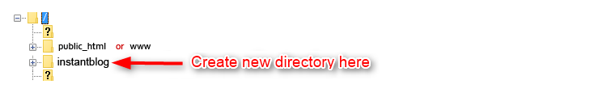
Navigate to the root directory and create a new directory with same level of your ( public_html or www ) , and rename it as " instantblog ".Note : We create a new "instantblog" directory because Laravel has different folder structure and safest way to store laravel files out of the public folder...
-
Upload Files : Extract the downloaded zip file from CodeCanyon and you will see those folders and files :

3a. Upload instantblog.zip to inside of newly created instantblog folder and extract it.
3b. Upload public.zip to your public_html or www or yoursite.com and extract it.. (Where you usually upload your files in your hosting.)
Note: On your hosting, your folder structure need to be like image below :
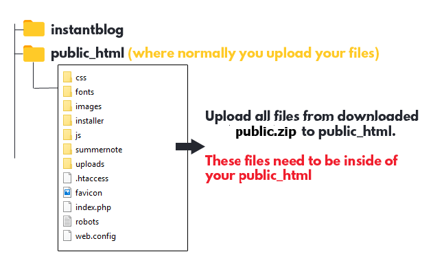 - Launch the Installer : You are ready to begin the installation process. Enter the following URL by changing with your domain name. Example : http://www.yourdomain.com/install
-
Installation Wizard Steps : Please follow installation wizard steps below.
-
Click the button "Next Step" to start the installation as shown below
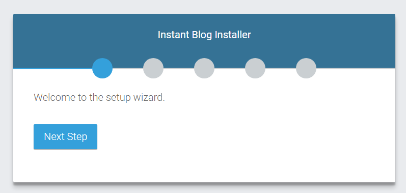
-
Here is the screen which checks whether the requirements are met. If you see a green checkmark as shown in the figure it does mean that you are free to move on to next step otherwise please make sure to have the mentioned requirements
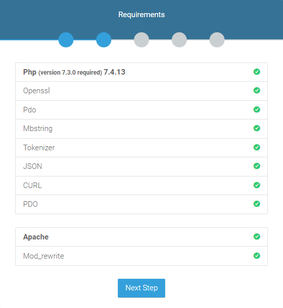 -
This is the permissions screen which checks whether the required folders have the mentioned permissions. If you see a green checkmark as shown in the figure it does mean that you are free to move on to next step otherwise please make your folder permissions correctly. (These folders are inside of your "instantblog" directory). Now you can press Install button.
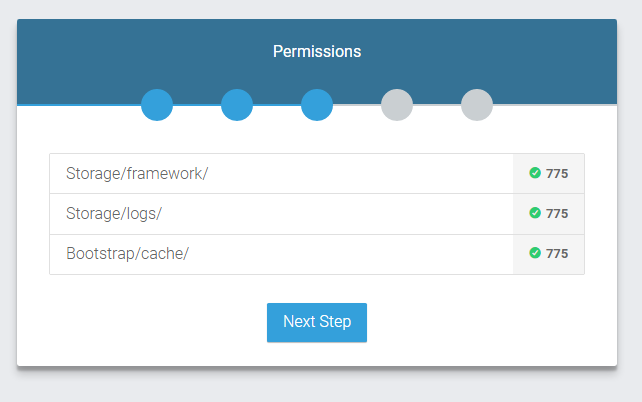 -
Enter your website url and your database informations as shown below, you dont need to change others.
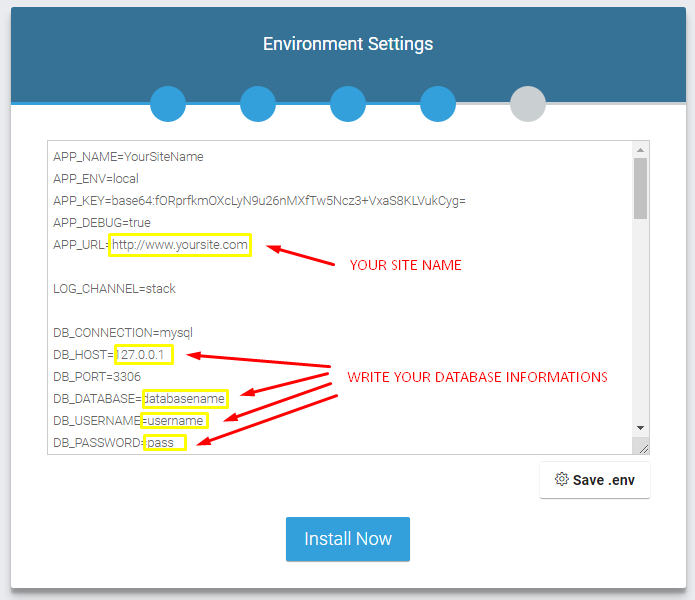Enter the host name for DB_HOST, generally the host name would be localhost
Enter the newly created database name for DB_DATABASE
Enter the MySQL username name for DB_USERNAME
Enter the MySQL PASSWORD name for DB_PASSWORD -
Click scroll down near text box and and enter your Facebook & Google Api informations
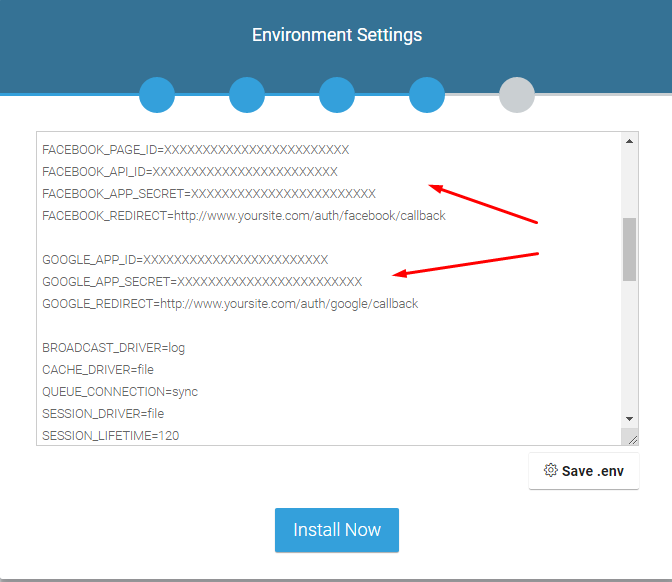For Facebook & Google redirects only change “http//www.yoursite.com/” and do not change “auth/facebook/callback” & “auth/google/callback”.
-
Click scroll down near text box and and enter your Hosting mail informations.
Than Click save.env, you will receive “Your .env file settings have been saved” message, move on to last step by clicking the button Install Now”.
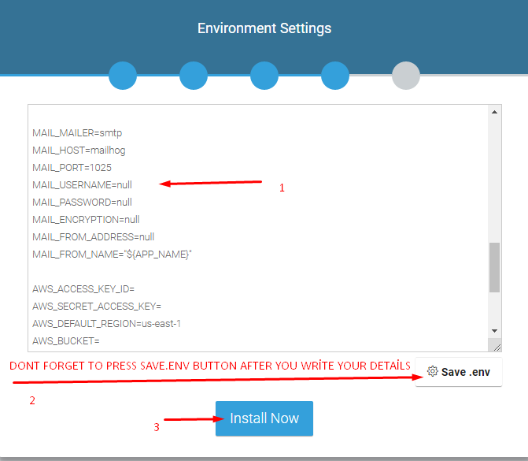Do not use space between words!
If you want to use Gmail as a server u can make these settings :
MAIL_DRIVER=smtp
MAIL_HOST=smtp.gmail.com
MAIL_PORT=587
MAIL_USERNAME=yourmail@gmail.com
MAIL_PASSWORD=xxxxxx
MAIL_ENCRYPTION=tls
MAIL_FROM_ADDRESS=from@yourmail.com
MAIL_FROM_NAME=ExampleName
* Than go to https://myaccount.google.com/lesssecureapps and turn on Less secure app access. -
It's All ! : If you didnt receive any error message, your installation is completed..You will see the below image in the final!
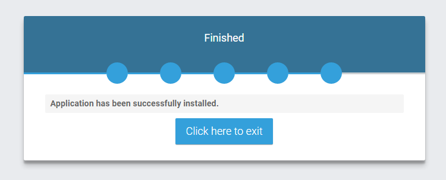
-
Now You can go to activation page :
Example : http://www.yourdomain.com/login
How to Activate?
Did you receive error :
If you wrote your database details wrong, you can start installation from begining. Follow these steps :
Delete "installed" file on your hosting
instantblog\storage\installedType on your browser
yoursite.com/installWhen you made changes, dont forget to press "save.env" button.
Installation on Cloud Server
IMPORTANT : Follow These instruction if you want to Install "Instant Blog" on Cloud Server with default Laravel structure, otherwise please dont pay attentiton!
Because "Instant Blog" folder structure is ready for shared hostings and you can easily change few lines codes and folder structure and you can install on Cloud Server.
- Extract the downloaded zip file from CodeCanyon and you will see those folders and files :
- Upload instantblog.zip to your server and extract it. Create a new folder inside and name it "public", Upload public.zip to inside of "public" folder and extract it. You will have default Laravel folder structure as below. 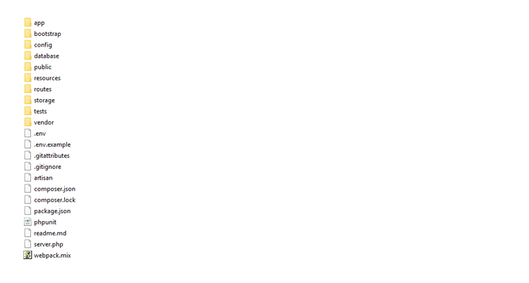
- Download and Open public/index.php and edit below codes with your html editor and re-upload.
-
Find :
require __DIR__.'/../instantblog/bootstrap/autoload.php';
and replace with :
require __DIR__.'/../bootstrap/autoload.php'; -
Find :
$app = require_once __DIR__.'/../instantblog/bootstrap/app.php';
and replace with :
$app = require_once __DIR__.'/../bootstrap/app.php'; -
Find and remove below code :
$app->bind('path.public', function () { return __DIR__; }); - Go to http://www.yourdomain.com/install and Installation Wizard will start. You can follow installation wizard steps from above.
Quick Start Guide
- After successful installation go to yourdomain.com/login and Activate the Instant Blog. After successful activation you will get your admin password and redirect to login page.
- After you logged in it will redirect you to member home page. Press Add new post button. 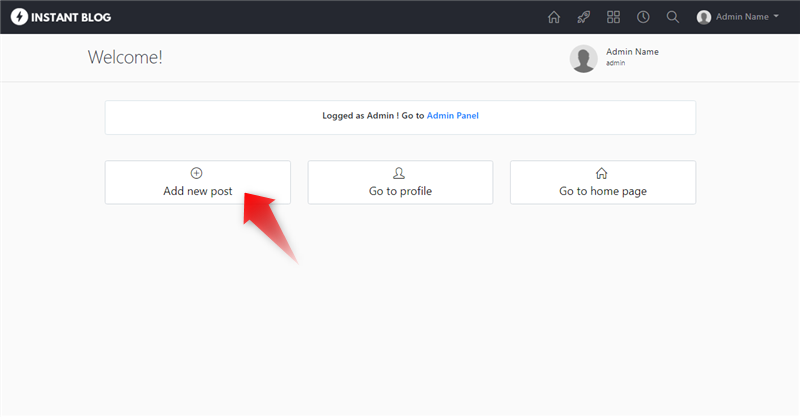
- You will see a form as below, You can create new post with this dynamic form. All inputs are explained below the image. 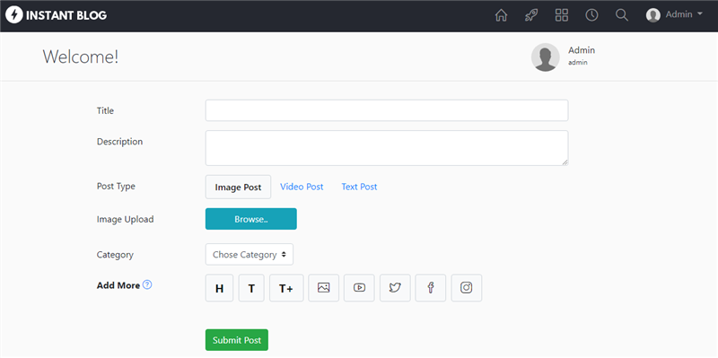
-
Title : Write title for your post.
-
Description : Write short description for your post. It will be shown under your title in the post.
-
Post Type : You can select wich kind of post you like to create. Below input box will change up to your choise.
- Image post : You can upload a photo and it will be thumbnail and poster of your post. You can upload jpg, png & gif formats. Recommended image with is minimum 860 px.
- Video post : You can use YouTube video for your thumbnail and poster of your post. You need to enter URL of the YouTube video and it will automaticly create thumbnail. Example :
https://www.youtube.com/watch?v=eXaMplE - Text post : If you dont want to use a image or video for your post, you can click this button. It will create text only post. But you can select background color of your post.
-
Category : Select a category for your post. You can create a new category from your admin panel. Go to categories section and create new category from there.
-
Add More : With this dynamic form you can add new content parts for your post. You can add unlimited new form inputs. Details are below :
- Header : You can add new header input.
- Text : You can add new text input for your content.
- Text + : It will add text editor, you can use it for styled text or for link adding.
- Image : You can upload images for your content.
- Youtube Video : You can insert YouTube video for your post, You just need to add URL of the video.
- Tweet : If you want to embed a Tweet inside of your post you can use this option. Just enter URL of the Tweet and press Embed button. Example :
https://twitter.com/Interior/status/463440424141459456 - Facebook Post : If you want to embed a Facebook Post inside of your post you can use this option. Just enter URL of the Facebook Post and press Embed button. Example :
https://www.facebook.com/20531316728/posts/10154009990506729/ - Instagram Post : If you want to embed a Instagram Post inside of your post you can use this option. Just enter URL of the Instagram Post and press Embed button. Example :
https://www.instagram.com/p/tsxp1hhQTG/ - Pinterest Post : If you want to embed a Pinterest Post inside of your post you can use this option. Just enter URL of the Pinterest Post and press Embed button. Example :
https://www.pinterest.com/pin/99360735500167749/
- When you are ready to publish your post, you can press “Submit Post” button and it will create post for you .
Settings Help
More information about Settings in admin panel.
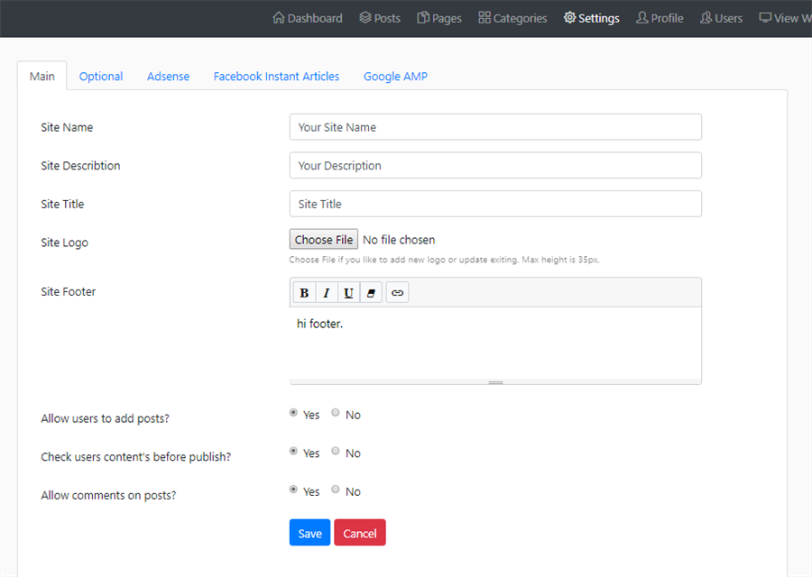- Main
- Site Name : Enter name of your site.
- Site Description : Enter description of the website for seo.
- Site Title : This is the title of your website and it will appear on your meta tags and browser.
- Site Logo : Upload logo for your website. Recommended
pngfile and size :200x35 - Allow users to add posts? If you want to disable users to add post, select “No” . It will hide “Add post button” for users.
- Allow comments on posts? : If you want to hide Facebook comment box on posts you can select “No”.
- Allow comments on posts? : If you want to hide Facebook comment box on posts you can select “No”.
- Optional
- On the tab you can see “Optional” settings. You can change text of menus from this tab. If you want to add Google Analytics code or Other script to head you can add it on this section.
- Adsense
- Post Adsense code : Inside of your post content it will appear.
- Post Sidebar Adsense code : It will display ads on sidebar of single post. Recommended style is square ad type.
- Between Posts Adsense : For adding ads to between posts on index page , use “Between Posts Adsense code” section.
- NOTE : If you use google adsense, for better result use “New In-feed Ad” option and make visual preferences there. Recommended “Image above” style.
- Facebook Instant Articles
- NOTE : If you just created your website and first time using Facebook Instant Articles, You need to create minimum 10 posts and submit them for review. Read more on Facebook Instant Articles Configration section.
- Theme : Write your theme name here. Example :
yourstyle
You can create new theme for your Facebook Instant Articles. To find the Style Editor Go to this url. -
Ads Code : Here you can use your ad code for Instant articles. Facebook automatic placement your ads.
-
If you want to use Audience Network ads use example code on below :
<figure class="op-ad"> <iframe width="300" height="250" style="border:0; margin:0;" src="https://www.facebook.com/adnw_request?placement=PLACEMENT_ID&adtype=banner300x250"></iframe> </figure>
Change “PLACEMENT_ID” with your Audience Network ID. To get placement ID read here.
For more information visit : https://developers.facebook.com/docs/instant-articles/monetization/audience-network -
If you want to use Google Adsense use code like below :
<figure class="op-ad"> <iframe height="300" width="250"> <!-- Include full ad code here --> </iframe> </figure>
Your ads iframe code need to be inside of<figure class="op-ad"> .... </figure>.
-
If you want to use Audience Network ads use example code on below :
- Google Amp
- Ads on Amp : If you want to use Ads on your Google Amp page click " yes" otherwise select “no”.
-
Ads Code : You can use your Ad code here, Google AMP support ads, but you need a special code for using it. You can find your App server code on this link : https://www.ampproject.org/docs/reference/components/amp-ad#supported-ad-networks
If you want to use Google Adsense example code will look like below, Change yourdata-ad-client&data-ad-slotwith your own information.
<amp-ad layout="responsive" width=300 height=250 type="adsense" data-ad-client="ca-pub-XXXXXXXXXXXXXXXXX" data-ad-slot="XXXXXXX"> </amp-ad>
FAQ
-
How to change images ?
If you like to change favicon and social share images. You can replace png files inside of public directory.
Favicon :favicon.pngsize:16x16
Social share image :images/social.pngsize:470x246 -
How to change style?
You can change style of the blog, by editing css file. It is located inside of “public/css” directory. Openinstant.cssby your text editor and you can make changes. -
How to delete posts?
When you logged in visit the post you have created and you can see edit & delete buttons on the top of your post. -
How to unpublish posts?
While editing your post, if you uncheck “Live” checkbox your content will not be appear on website, but you can see them on “Posts” section under Unpublished tab. -
How to create a post category ?
You can create a post category from Admin panel > Categories section. Only active categories will be appear on website. It mean you need to link at least a single content with that. -
How to use Instant Blog on https (HTTP Secure) website ?
If you are using https domain and if you have image upload problem it will fix it.
Open instantblog\app\Providers\AppServiceProvider.php file with your text editor and make these changes like image below:
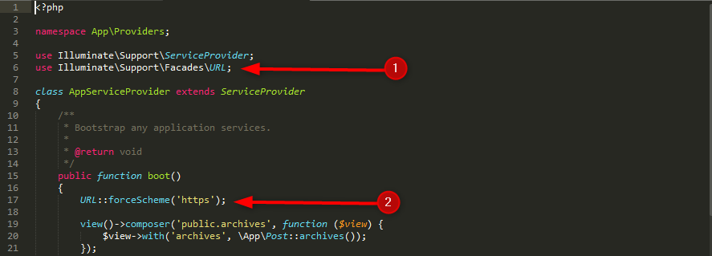- Add this code as above image :
use Illuminate\Support\Facades\URL; - Add this code as above image :
URL::forceScheme('https'); - Save and Upload file to your hosting again.
- Add this code as above image :
User Roles
You can change user roles from " admin panel > users " section. Click edit on user and choose role.
-
Super Admin : First user when you install the script your admin user. Has all the rights.
-
Admin : Can see admin panel & change site settings, can edit & delete posts & users, change user roles etc.
-
Editor : Can edit & delete & publish posts , if your site setting is dont allow posts for users , editor can add post.
-
Verified User : if your site setting is check posts before publish for users , Verified User can add post.
How to create Facebook Page
- Go to facebook.com/pages/create
- Click to choose a Page category
- Select a more specific category from the dropdown menu and fill out the required information
- Click Get Started and follow the on-screen instructions
How to get Facebook Page ID ?
After your page created, You can get your Page id :
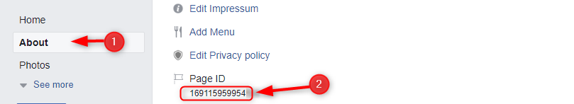- Open your Facebook page.
- Click the About tab.
- Scroll down to the bottom of the Page Info section.
- You can find your page ID there.
- Copy your ID and you will use it during the installation of “Instant Blog”.
How to create Facebook Api
You need Facebook api for social login. Follow these steps :
- Go to https://developers.facebook.com/apps/
- Click Add a new app on the left top of the page.
- Click For Everything Else from pop-up.
- Write App Display Name, App Contact Email and click create app button.
- Now you can see your App ID and click show button to see your App Secret. Copy them you will use during the installation of “Instant Blog”. As you can see on empty green circle, App is not “Live” yet, we need to make some settings, follow below steps.

-
Click Settings on the left menu, under Basic options make following changes.
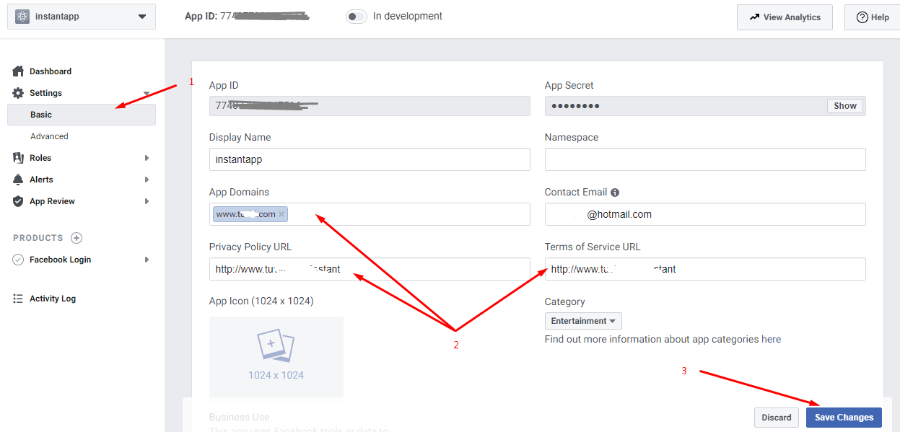- App Domains : Write your domain name.
- Privacy Policy URL : If you have Privacy Policy URL write it or write only your domain.
- Terms of Service URL : If you have Terms of Service URL write it or write only your domain.
- Click “+Add Platform” button and select Website, then write your domain on that section too, and press Save Settings button.
- Now we need to make App is live. Click In development on the top menu. And opening page under “switch to live mode” , click Switch Mode.
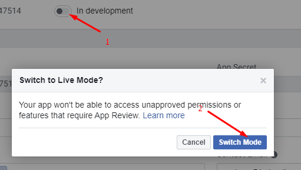
- For Facebook social login to Instant Blog we need to add product. Click Facebook Login on the left menu. Select Settings.
- NOTE: YOUR WEBSITE NEED TO SUPPORT HTTPS (SSL)
- Click Facebook Login > Settings. And select make following changes :
- Client OAuth Login : select Yes.
- Web OAuth Login : select Yes.
- Use Strict Mode for Redirect URIs : select Yes.
- Valid OAuth redirect URIs : Write your Url like this
https://www.yourdomain.com/auth/facebook/callbackchange “yourdomain” with your domain name.
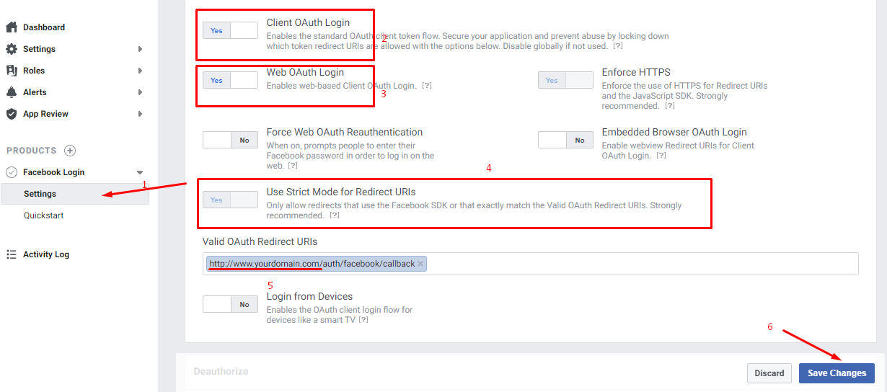
- Its All : Save Changes.
- You must also add oEmbed product to your app for using embed feature on https://developers.facebook.com/apps/.
Instant Articles Configration
After successful installation of “Instant Blog” Script you can follow these steps to setup Facebook Instant Articles.
Check if your Facebook page is eligible for Instant Articles : https://www.facebook.com/instant_articles/signup
- Login to your Facebook Page.
- Click Publishing Tools > Configration under the Tools click Connect Your Site.
- Write your domain name to URL input and press Claim URL button.
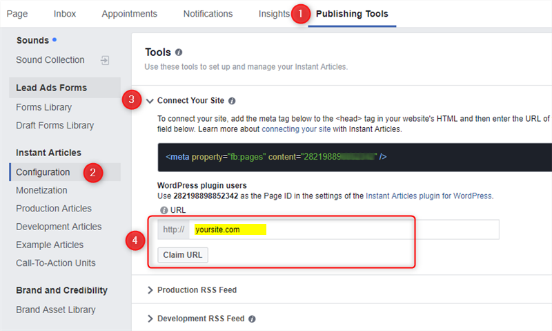 - Click Production RSS Feed and write your domain by adding "facebook/facebook-rss" to the end of your URL. Press Save button. Once you’ve connected your RSS feed to your Facebook Page, Facebook automaticly will pull stories from your RSS feed into the Instant Articles system.
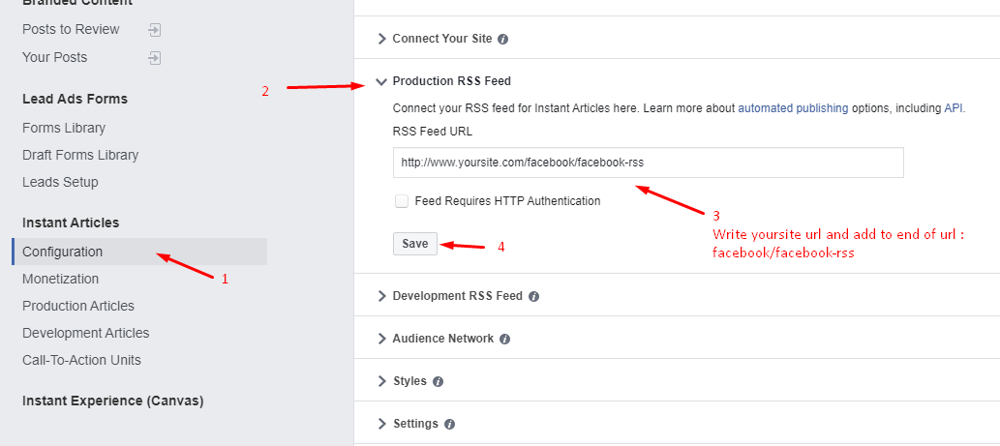 - Configration complated. Follow Publishing Posts to Instant Articles steps below .
First time Publishing Posts to Instant Articles :
- Prepare minimum 10 posts on your Instant Blog Script for review.
Be sure on Instant Blog Script’s Facebook Instant Articles setting page “Production” check box is selected. -
Go to your Facebook Page and click Publishing Tools > Configration. Click Submit for Review.
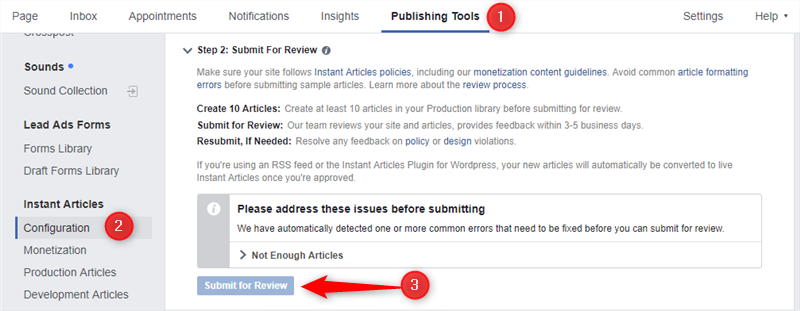 * Review may take 3-5 business days. -
Once your Instant Articles feed has been approved, you’ll be ready to go.
-
Share on your Facebook Page : Distribute your Instant Articles as you would with any link: Just compose a new post on facebook, include the article link, and share! Instant Articles are never posted to your page automatically.
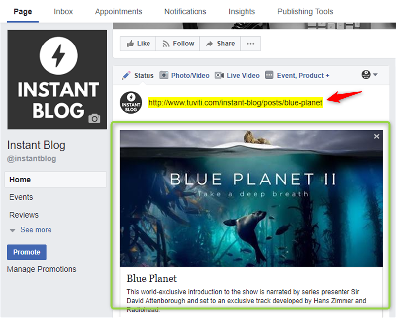
NOTES :
-
For testing your instant articles, visit your Facebook Page with your mobile phone. You will see Instant Articles icon like below :
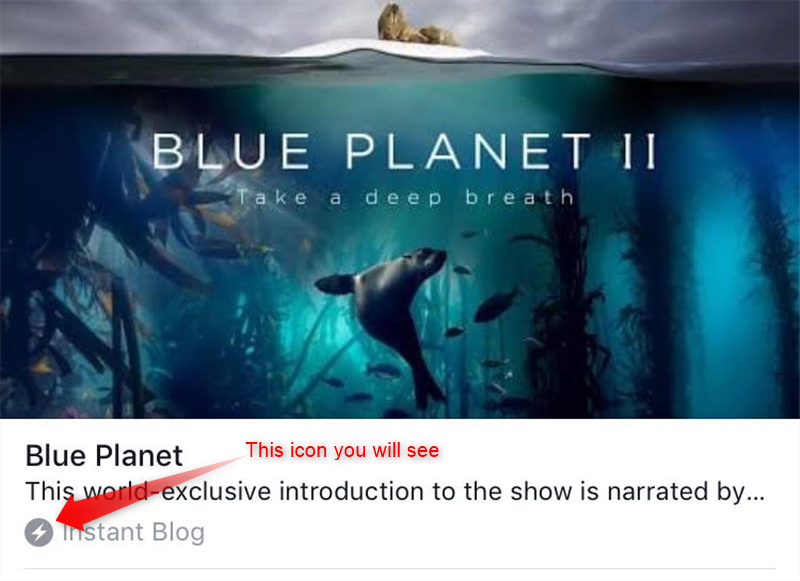
Audience Network Configration (optional)
Note: This configration is optional you may use different Ad servers too.
If you want to use Facebook Audience Network Ads on your Facebook Instant Articles you can follow these steps.
- Go to https://developers.facebook.com/apps/ and select your app.
- Choose Audience Network from the Products list on the left and then click Payout. Fill out the form. For more information visit : https://www.facebook.com/help/audiencenetwork/103628146695524
- When you finished payout informations, Click Placement on your App.
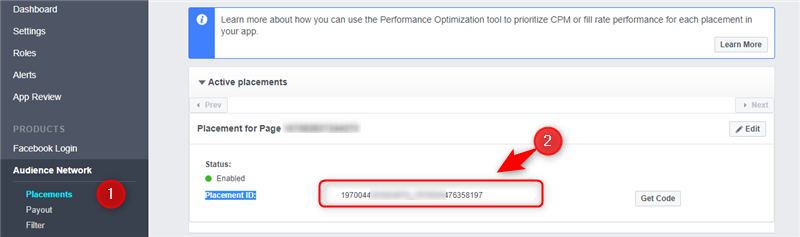 - Copy your Placement ID . You can use this placement ID while you add your Ad code on Settings page in Instant Blog. Change it with example code. For more information see Ads Code section.
How to create Google Api
You will need google api for social logins. To create a Google Api just follow the steps below.
-
Go to https://developers.google.com/ and log in or create an account, if necessary.
-
After logging in go to this link https://console.developers.google.com/project and click on the blue CREATE PROJECT button as depicted in the photo below. Wait a moment as google prepares your project.
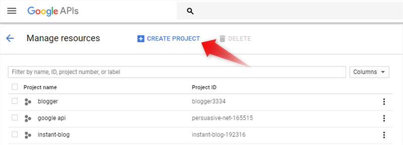 -
Fill in whatever Project Name you want and press create button.
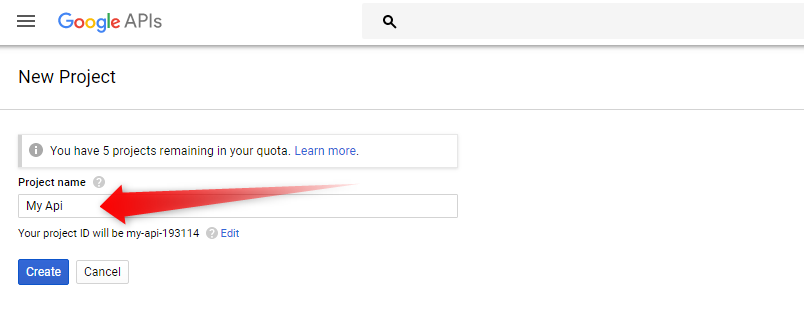 -
You will be redirected to below page , here click on the logo Google Api logo.
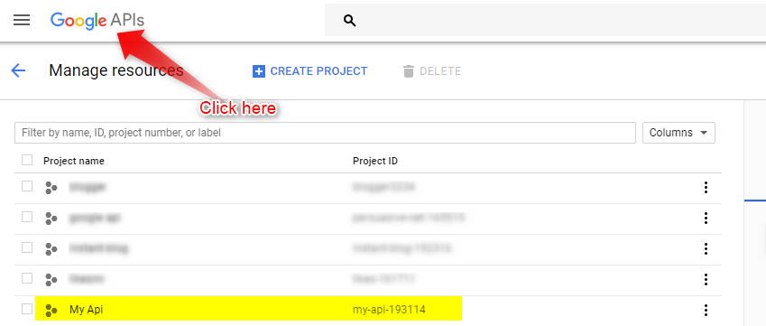 -
Select your Api from dropdown menu and click browse the Library link.
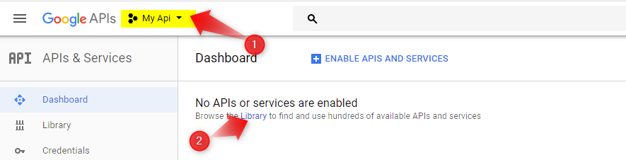 -
On the search form write “Google+” and click on the Google+API box below.
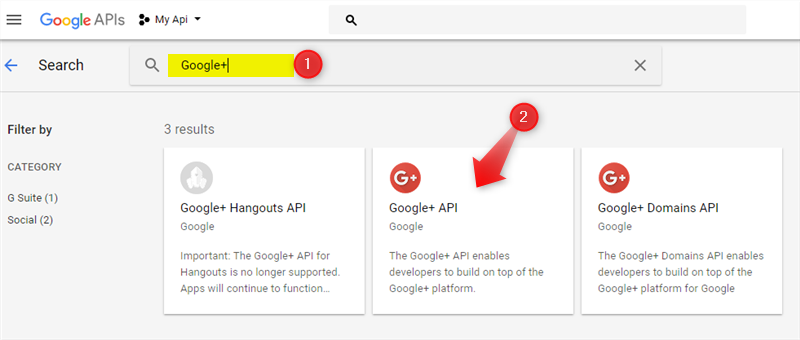 -
Now click on the “ENABLE” button.
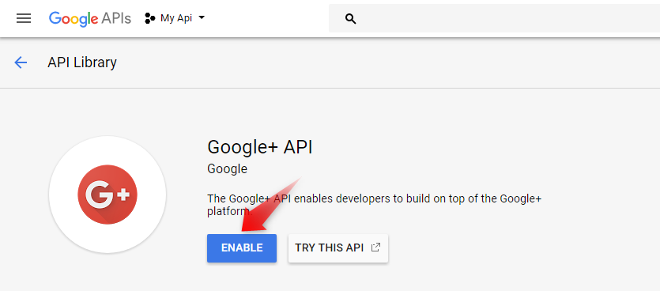 -
Next click on the blue ‘Create Credentials’ button to the right.
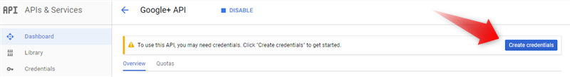 -
Choose the select option Google+ API for the first select option and Web browser (javascript) for the second selection. Then choose User data. Now click the blue button, “What credentials do I need?.”
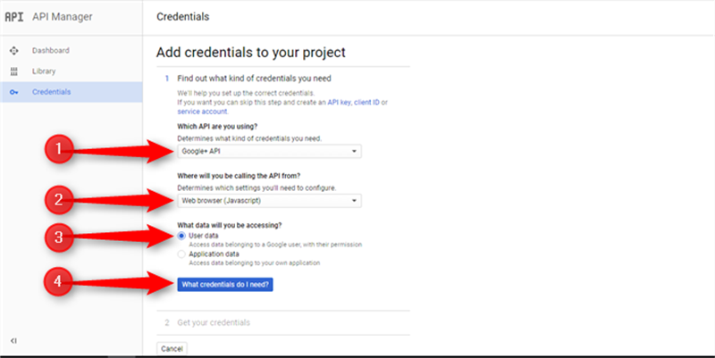 -
Enter your site URL to Authorised JavaScript origins and enter “http://www.yoursite.com/auth/google/callback” for Authorised redirect URIs. Then Click "Create client ID "button.
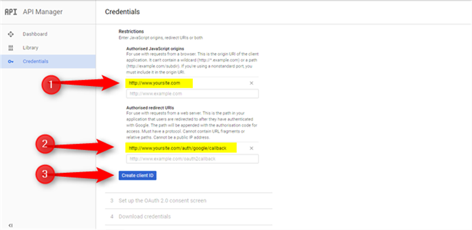 -
Select your e-mail adress and Write a Product name then click “Continue” button.

-
Almost done, wait for google to create your new project and you should see the screen below where you can copy Google Client Id.
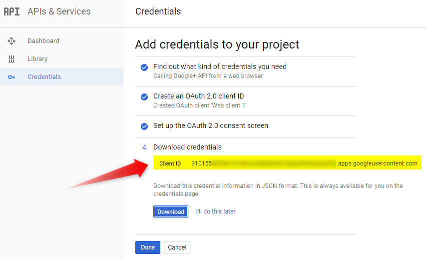 -
For taking your Google Client Secret . Click “Credentials” on the left menu. Select your newly created Credential and click edit icon. You can see your Google Client Id & Google Client Secret there.
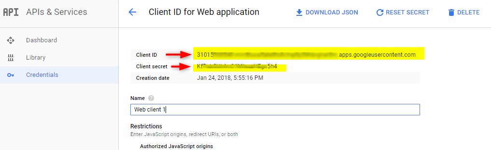
Google AMP Configration
You dont need any setup for Google AMP pages.
When you create a normal post on your blog, it will create AMP page too. By adding “/amp” slug to your post Url you can see your amp page. Example : www.yoursite.com/posts/your-post-name/amp
If you want to index your AMP Page on Google immediately you can use this link to submit your post :
https://search.google.com/test/amp
Activate & Deactivate
How to Activate?
When you installed Instant Blog script for the first time, you need to activate it.
-
Go to login page (yourdomain.com/login) and it will ask you to enter your Code Canyon Purchase Code. If you do not know about your Purchase Code please follow this tutorial: Where Is My Purchase Code?
-
Enter your Code Canyon Purchase Code
-
Press Activate button
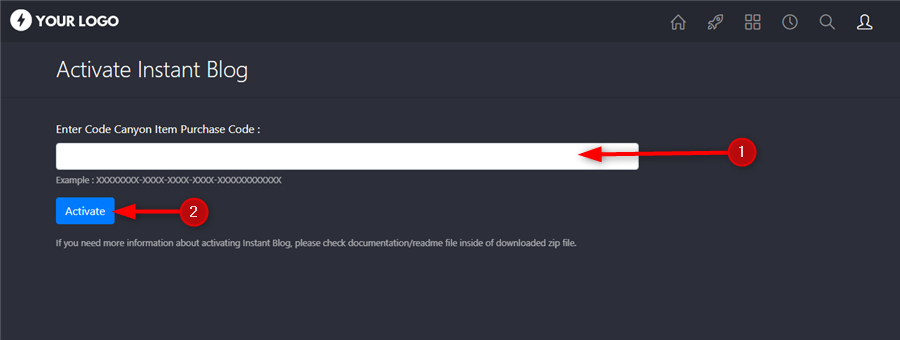 -
After successful activation you will be redirected below page, and you can copy your admin password. Click "Go to login page" and use your password.
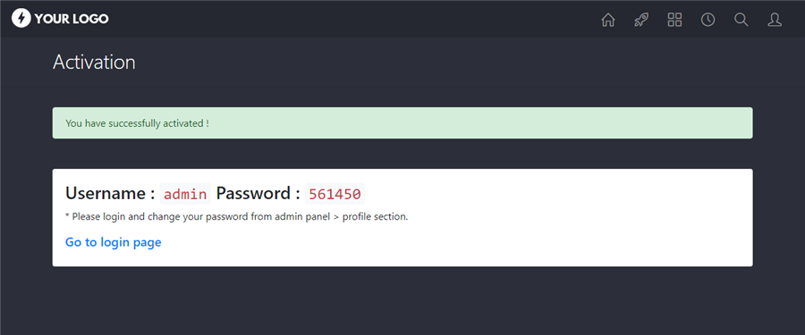
* Please do not forget to change your password from admin panel / profile section.
* Password on the below image is example. You will have an unique generated password.
Notes:
- Your purchase from CodeCanyon entitles you to a single use of your purchase. If you wish to use the product on multiple sites, you need to purchase multiple licenses – one license per site. This is made clear when you are purchasing on License Terms.
- If you want to move your website to another domain, you need to deactivate current website first and need to re-activate for your new domain.
- If you have any trouble about activation, you can contact us from Code Canyon Support Page.
How to Deactivate?
If you have previously activated your license on a website, you no longer are able to activate the same license on another domain. So If you plan to use your license for another website, you can deactivate current website, and then you are able to activate it on the new website.
-
Login Instant Blog with your Admin profile.
-
Go to yourdomain.com/deactivate
-
Press Deactivate button
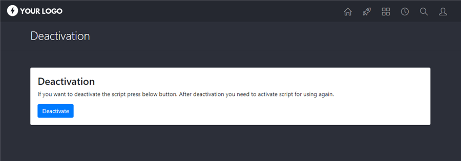 -
After successful deactivation please delete "instantblog" folder from your deactivated website hosting.
* Do not forget : You will not be able to use deactivated website and you will lose your datas when you delete your website.
Translation
For translating user-side text on Instant Blog follow these steps:
- Open "instantblog\resources\lang\en\messages.php" with your text editor and replace sentences with your own language 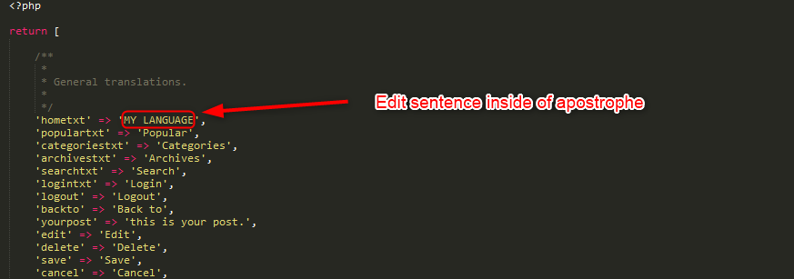
- Open "instantblog\resources\lang\en.json" if you want to translate user roles, change second line.
- When your editing finished, save and upload files to same locations.
Optional Translations :
-
Translating validation messages : Validation messages are created by Laravel if you want to change them. Open "instantblog\resources\lang\en\validation.php" with your text editor and replace sentences with your own language. But while editing you will see
:attributesentences, do not edit them. just replace english text. You dont need to translate all , just translate necessary sentences. -
Translating time-ago text : If you like to translate time-ago text to your language follow these steps:

- Open : "instantblog\app\Providers\AppServiceProvider.php" with your text editor.
- Add
use Carbon\Carbon;code as on below image. - Add
Carbon::setLocale('xx');code as on below image. Change "xx" with your language code. - Save and upload to same location on your hosting. 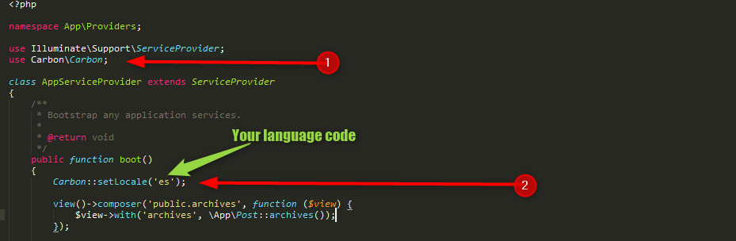
FAQ
-
How to change images ?
If you like to change favicon and social share images. You can replace png files inside of public directory.
Favicon :favicon.pngsize:16x16
Social share image :images/social.pngsize:470x246 -
How to change style?
You can change style of the blog, by editing css file. It is located inside of “public/css” directory. Openinstant.cssby your text editor and you can make changes. -
How to delete posts?
When you logged in visit the post you have created and you can see edit & delete buttons on the top of your post. -
How to unpublish posts?
While editing your post, if you uncheck “Live” checkbox your content will not be appear on website, but you can see them on “Posts” section under Unpublished tab. -
How to create a post category ?
You can create a post category from Admin panel > Categories section. Only active categories will be appear on website. It mean you need to link at least a single content with that. -
How to use Instant Blog on https (HTTP Secure) website ?
If you are using https domain and if you have image upload problem it will fix it.
Open instantblog\app\Providers\AppServiceProvider.php file with your text editor and make these changes like image below:
- Add this code as above image :
use Illuminate\Support\Facades\URL; - Add this code as above image :
URL::forceScheme('https'); - Save and Upload file to your hosting again.
- Add this code as above image :
Changelog
Instant Blog v2.3
- Fix some files.
Instant Blog v2.2
- Laravel framework updated.
- Added user roles.
- Fix api changes.
- Fix some files.
Instant Blog v2.1
- Fix api changes.
Instant Blog v2.0
- New design.
- Laravel framework updated.
- Facebook Instant Article updated.
- Fix some files.
Instant Blog v1.5
- Blank link windows fix.
- Added forget password feature.
Instant Blog v1.4
- Facebook api update fix.
- Responsive share buttons style fix.
Instant Blog v1.3
- Added Pinterest Features
- Added RSS feed ( yoursite.com/feed )
- Added Translation for user-side
- Facebook responsive embed fix
- Fix for admin nav page
Instant Blog v1.2
- fix some files
Instant Blog v1.1
- Added Page Feature.
- Added Footer Feature.
- Added Google Analytics code box.
- Auto generate slug for unsupported charachters.
- Firefox image upload fixed.
- Social user image fixed.
- Google amp image size fixed.
- Script Activator & Deactivator.
- Readme document updated.
Instant Blog v1.0
- Initial public release